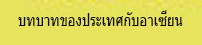

|  |
|---|
ลักษณะการปกครอง
สาธารณรัฐประชาธิปไตยประชาชนลาวมีระบบการปกครองแบบสังคมนิยมคอมมิวนิสต์ (ทางการลาวใช้คำว่า ระบอบประชาธิปไตยประชาชน) โดยมีพรรคประชาชนปฏิวัติลาวเป็นองค์กรชี้นำประเทศ ซึ่งมีอำนาจสูงสุดตั้งแต่ลาวเริ่มปกครองในระบอบสังคมนิยม เมื่อ 2 ธันวาคม พ.ศ. 2518
ประมุข-ประธานประเทศ หรือตำแหน่งประธานาธิบดี คือ พลโท จูมมะลี ไชยะสอน (8 มิถุนายน พ.ศ. 2549)
หัวหน้ารัฐบาล-นายกรัฐมนตรี คือ นายบัวสอน บุบผาวัน (8 มิถุนายน พ.ศ. 2549)
สถาบันการเมืองที่มั่นคงของลาว
- พรรคประชาชนปฏิวัติลาว ( The Lao People Revolutionary Party PRD)
- สภารัฐมนตรี ( พรรคประชาชนปฏิวัติลาวทำหน้าที่แต่งตั้งคณะรัฐมนตรี)
- สภาแห่งชาติ ( The national Assembly ) ทำหน้าที่ด้านนิติบัญญัติและด้านตุลาการ มีหน้าที่ดูแลอนุมัติงบประมาณ การออกและการแก้ไขกฎหมายตลอดจนพระราชบัญญัติต่างรวมทั้งการกำกับดูแลการทำงานของรัฐบาล
การแบ่งอำนาจการปกครอง
แบ่งออกเป็น 3 ฝ่ายคือ ฝ่ายนิติบัญญัติ ฝ่ายตุลาการ และฝ่ายบริหาร
การจัดตั้งการบริหาร
- หมู่บ้านผู้บริหารของหมู่บ้าน คือ นายบ้าน(ผู้ใหญ่บ้าน)
- เมือง (อำเภอ)ผู้บริหารเมือ คือ คณะกรรมการปกครอง(เจ้าเมือง)
- แขวง (จังหวัด)ผู้บริหารแขวง คือ คณะกรรมการปกครอง(เจ้าแขวง)
- ผู้บริหารนครหลวงคณะกรรมการปกครองนครหลวงเวียงจันทร์/เจ้านครหลวงเวียงจันทร์
เขตการปกครอง แบ่งเป็น 1 นครหลวง กับ 16 แขวง ได้แก่ นครหลวงเวียงจันทร์ สะหวันนะเขต สาละวัน เชียงขวาง เซกอง บอลิคำไซ บ่อแก้ว หลวงพระบาง จำปาสัก อุดมไซ หลวงน้ำทา หัวพัน พงสาลี เวียงจันทร์ อัตตะบือ ไซยะบุลี คำม่วน